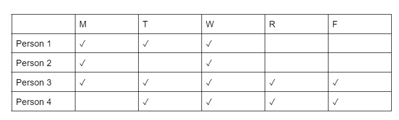

Carpool Scheduling Using the Edmonds-Karp Algorithm
I worked with a team to create a fair carpool sharing system via the use of network flows. I implemented the Edmonds-Karp algorithm with our network flows representation in order to maximize the flow while making sure all people are driving a fair amount.
The table above shows a potential schedule the algorithm can see and will transform into a graph. Given the amount of days and who needs the car which days, it will be able to designate who will drive for a given day.
The structure of our Edmonds-Karp algorithm code is as follows:
This function utilizes several helper functions such as the Breadth First Search Algorithm (BFS). BFS checks if there is a path from source to sink which will tell our Edmond-Karp function when to stop.
The output will have a similar table as its input, however, the value at each row-column intersection is the probability (or responsibility percent) of the person to drive on the given day. Our algorithm is able to successfully generate a driving responsibility schedule that allows us to determine who should drive on which day by looking at the person with the highest percentage on that day. When we compare the original carpool schedule to the results, we notice that the number of days a person is using the carpool is usually proportional to how much a person would drive.
The paper written by me and my partners can be read here
The code can be found on Github